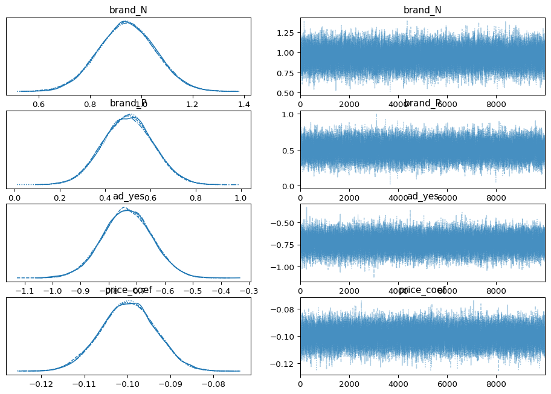

Show/Hide Code
import pandas as pd
conjoint = pd.read_csv("conjoint_data.csv")
conjoint.head()| resp | task | choice | brand | ad | price | |
|---|---|---|---|---|---|---|
| 0 | 1 | 1 | 1 | N | Yes | 28 |
| 1 | 1 | 1 | 0 | H | Yes | 16 |
| 2 | 1 | 1 | 0 | P | Yes | 16 |
| 3 | 1 | 2 | 0 | N | Yes | 32 |
| 4 | 1 | 2 | 1 | P | Yes | 16 |
Idris Huang
May 28, 2025
This assignment expores two methods for estimating the MNL model: (1) via Maximum Likelihood, and (2) via a Bayesian approach using a Metropolis-Hastings MCMC algorithm.
Suppose we have \(i=1,\ldots,n\) consumers who each select exactly one product \(j\) from a set of \(J\) products. The outcome variable is the identity of the product chosen \(y_i \in \{1, \ldots, J\}\) or equivalently a vector of \(J-1\) zeros and \(1\) one, where the \(1\) indicates the selected product. For example, if the third product was chosen out of 3 products, then either \(y=3\) or \(y=(0,0,1)\) depending on how we want to represent it. Suppose also that we have a vector of data on each product \(x_j\) (eg, brand, price, etc.).
We model the consumer’s decision as the selection of the product that provides the most utility, and we’ll specify the utility function as a linear function of the product characteristics:
\[ U_{ij} = x_j'\beta + \epsilon_{ij} \]
where \(\epsilon_{ij}\) is an i.i.d. extreme value error term.
The choice of the i.i.d. extreme value error term leads to a closed-form expression for the probability that consumer \(i\) chooses product \(j\):
\[ \mathbb{P}_i(j) = \frac{e^{x_j'\beta}}{\sum_{k=1}^Je^{x_k'\beta}} \]
For example, if there are 3 products, the probability that consumer \(i\) chooses product 3 is:
\[ \mathbb{P}_i(3) = \frac{e^{x_3'\beta}}{e^{x_1'\beta} + e^{x_2'\beta} + e^{x_3'\beta}} \]
A clever way to write the individual likelihood function for consumer \(i\) is the product of the \(J\) probabilities, each raised to the power of an indicator variable (\(\delta_{ij}\)) that indicates the chosen product:
\[ L_i(\beta) = \prod_{j=1}^J \mathbb{P}_i(j)^{\delta_{ij}} = \mathbb{P}_i(1)^{\delta_{i1}} \times \ldots \times \mathbb{P}_i(J)^{\delta_{iJ}}\]
Notice that if the consumer selected product \(j=3\), then \(\delta_{i3}=1\) while \(\delta_{i1}=\delta_{i2}=0\) and the likelihood is:
\[ L_i(\beta) = \mathbb{P}_i(1)^0 \times \mathbb{P}_i(2)^0 \times \mathbb{P}_i(3)^1 = \mathbb{P}_i(3) = \frac{e^{x_3'\beta}}{\sum_{k=1}^3e^{x_k'\beta}} \]
The joint likelihood (across all consumers) is the product of the \(n\) individual likelihoods:
\[ L_n(\beta) = \prod_{i=1}^n L_i(\beta) = \prod_{i=1}^n \prod_{j=1}^J \mathbb{P}_i(j)^{\delta_{ij}} \]
And the joint log-likelihood function is:
\[ \ell_n(\beta) = \sum_{i=1}^n \sum_{j=1}^J \delta_{ij} \log(\mathbb{P}_i(j)) \]
We will simulate data from a conjoint experiment about video content streaming services. We elect to simulate 100 respondents, each completing 10 choice tasks, where they choose from three alternatives per task. For simplicity, there is not a “no choice” option; each simulated respondent must select one of the 3 alternatives.
Each alternative is a hypothetical streaming offer consistent of three attributes: (1) brand is either Netflix, Amazon Prime, or Hulu; (2) ads can either be part of the experience, or it can be ad-free, and (3) price per month ranges from $4 to $32 in increments of $4.
The part-worths (ie, preference weights or beta parameters) for the attribute levels will be 1.0 for Netflix, 0.5 for Amazon Prime (with 0 for Hulu as the reference brand); -0.8 for included adverstisements (0 for ad-free); and -0.1*price so that utility to consumer \(i\) for hypothethical streaming service \(j\) is
\[ u_{ij} = (1 \times Netflix_j) + (0.5 \times Prime_j) + (-0.8*Ads_j) - 0.1\times Price_j + \varepsilon_{ij} \]
where the variables are binary indicators and \(\varepsilon\) is Type 1 Extreme Value (ie, Gumble) distributed.
The following code imports the previously–simulated conjoint data.
| resp | task | choice | brand | ad | price | |
|---|---|---|---|---|---|---|
| 0 | 1 | 1 | 1 | N | Yes | 28 |
| 1 | 1 | 1 | 0 | H | Yes | 16 |
| 2 | 1 | 1 | 0 | P | Yes | 16 |
| 3 | 1 | 2 | 0 | N | Yes | 32 |
| 4 | 1 | 2 | 1 | P | Yes | 16 |
:::
The “hard part” of the MNL likelihood function is organizing the data, as we need to keep track of 3 dimensions (consumer \(i\), covariate \(k\), and product \(j\)) instead of the typical 2 dimensions for cross-sectional regression models (consumer \(i\) and covariate \(k\)). The fact that each task for each respondent has the same number of alternatives (3) helps. In addition, we need to convert the categorical variables for brand and ads into binary variables.
# Data preparation for MNL
import pandas as pd
import numpy as np
X = (
conjoint
.assign(
brand_N=lambda d: (d["brand"] == "N").astype(int),
brand_P=lambda d: (d["brand"] == "P").astype(int),
ad_yes=lambda d: (d["ad"] == "Yes").astype(int)
)
)
design_cols = ["brand_N", "brand_P", "ad_yes", "price"]
design_cols_mle = ["brand_N", "brand_P", "ad_yes", "price"]
design_cols_bayes = ["brand_N", "brand_P", "ad_yes", "price_coef"]
X_design = X[design_cols].to_numpy()
y = X["choice"].to_numpy()
tasks = (X["resp"].astype(str) + "_" + X["task"].astype(str)).to_numpy()
print("Design matrix shape:", X_design.shape)
print("Number of unique choice tasks:", len(np.unique(tasks)))Design matrix shape: (3000, 4)
Number of unique choice tasks: 1000# Maximum Likelihood Estimation
import numpy as np
from scipy.optimize import minimize
import pandas as pd
def neg_loglike(beta):
ll = 0.0
for t in np.unique(tasks):
idx = tasks == t
utilities = X_design[idx] @ beta
expu = np.exp(utilities)
probs = expu / expu.sum()
ll += np.log(probs[y[idx] == 1][0])
return -ll
init_beta = np.zeros(X_design.shape[1])
res = minimize(neg_loglike, init_beta, method="BFGS")
beta_hat = res.x
cov = res.hess_inv
se = np.sqrt(np.diag(cov))
mle_results = pd.DataFrame({
"coef": beta_hat,
"std_err": se,
"z": beta_hat / se
}, index=design_cols_mle)
mle_results| coef | std_err | z | |
|---|---|---|---|
| brand_N | 0.941195 | 0.063014 | 14.936269 |
| brand_P | 0.501616 | 0.026838 | 18.690485 |
| ad_yes | -0.731994 | 0.013983 | -52.350695 |
| price | -0.099480 | 0.008785 | -11.323711 |
# Bayesian Estimation via MCMC
import numpy as np
import pymc as pm
import arviz as az
with pm.Model() as mnl_bayes:
# Priors
brand_N = pm.Normal("brand_N", mu=0, sigma=5)
brand_P = pm.Normal("brand_P", mu=0, sigma=5)
ad_yes = pm.Normal("ad_yes", mu=0, sigma=5)
price_coef = pm.Normal("price_coef", mu=0, sigma=1)
beta_vec = pm.math.stack([brand_N, brand_P, ad_yes, price_coef])
# Utilities and choice probabilities
utilities = pm.math.dot(X_design, beta_vec)
J = 3 # alternatives per task
utilities_task = utilities.reshape((-1, J))
p = pm.math.softmax(utilities_task, axis=1)
# Observed choices (index of chosen alt per task)
y_choice = y.reshape((-1, J)).argmax(axis=1)
pm.Categorical("choice", p=p, observed=y_choice)
trace = pm.sample(draws=10_000, tune=1_000,
target_accept=0.9,
return_inferencedata=True,
progressbar=False)
az.plot_trace(trace, var_names=design_cols_bayes)
az.summary(trace, var_names=design_cols_bayes)Initializing NUTS using jitter+adapt_diag...
Multiprocess sampling (4 chains in 4 jobs)
NUTS: [brand_N, brand_P, ad_yes, price_coef]
Sampling 4 chains for 1_000 tune and 10_000 draw iterations (4_000 + 40_000 draws total) took 8 seconds.| mean | sd | hdi_3% | hdi_97% | mcse_mean | mcse_sd | ess_bulk | ess_tail | r_hat | |
|---|---|---|---|---|---|---|---|---|---|
| brand_N | 0.943 | 0.111 | 0.735 | 1.155 | 0.001 | 0.001 | 32820.0 | 29291.0 | 1.0 |
| brand_P | 0.502 | 0.111 | 0.294 | 0.711 | 0.001 | 0.001 | 32313.0 | 29139.0 | 1.0 |
| ad_yes | -0.734 | 0.088 | -0.900 | -0.570 | 0.000 | 0.000 | 36807.0 | 29491.0 | 1.0 |
| price_coef | -0.100 | 0.006 | -0.112 | -0.088 | 0.000 | 0.000 | 35236.0 | 29361.0 | 1.0 |

Posterior means (0.94, 0.50, −0.74, −0.10) are virtually identical to the MLE estimates, confirming that weakly-informative priors let the data dominate.
Managerial take-aways
# Imports
import pandas as pd
import numpy as np
import pymc as pm
import arviz as az
from scipy.optimize import minimize
# Load Data
conjoint = pd.read_csv("conjoint_data.csv")
conjoint = (
conjoint
.assign(
brand_N=lambda d: (d["brand"] == "N").astype(int),
brand_P=lambda d: (d["brand"] == "P").astype(int),
ad_yes=lambda d: (d["ad"] == "Yes").astype(int)
)
)
design_cols = ["brand_N", "brand_P", "ad_yes", "price"]
design_cols_mle = ["brand_N", "brand_P", "ad_yes", "price"]
design_cols_bayes = ["brand_N", "brand_P", "ad_yes", "price_coef"]
X_design = conjoint[design_cols].to_numpy()
y = conjoint["choice"].to_numpy()
tasks = (conjoint["resp"].astype(str) + "_" + conjoint["task"].astype(str)).to_numpy()
J = 3 # alternatives per task
# Maximum Likelihood
def neg_loglike(beta):
ll = 0.0
for t in np.unique(tasks):
idx = tasks == t
utilities = X_design[idx] @ beta
p = np.exp(utilities)
p /= p.sum()
ll += np.log(p[y[idx]==1][0])
return -ll
beta0 = np.zeros(X_design.shape[1])
res = minimize(neg_loglike, beta0, method="BFGS")
beta_hat = res.x
cov = res.hess_inv
se = np.sqrt(np.diag(cov))
mle_results = pd.DataFrame({
"coef": beta_hat,
"std_err": se,
"z": beta_hat/se
}, index=design_cols_mle)
print("MLE results:")
print(mle_results)
# Bayesian Estimation
with pm.Model() as mnl_bayes:
brand_N = pm.Normal("brand_N", mu=0, sigma=5)
brand_P = pm.Normal("brand_P", mu=0, sigma=5)
ad_yes = pm.Normal("ad_yes", mu=0, sigma=5)
price_coef = pm.Normal("price_coef", mu=0, sigma=1)
beta_vec = pm.math.stack([brand_N, brand_P, ad_yes, price_coef])
utilities = pm.math.dot(X_design, beta_vec)
utilities_task = utilities.reshape((-1,J))
p = pm.math.softmax(utilities_task, axis=1)
y_choice = y.reshape((-1,J)).argmax(axis=1)
pm.Categorical("choice", p=p, observed=y_choice)
trace = pm.sample(draws=10_000, tune=1_000, target_accept=0.9,
return_inferencedata=True)
print(az.summary(trace, var_names=design_cols_bayes))